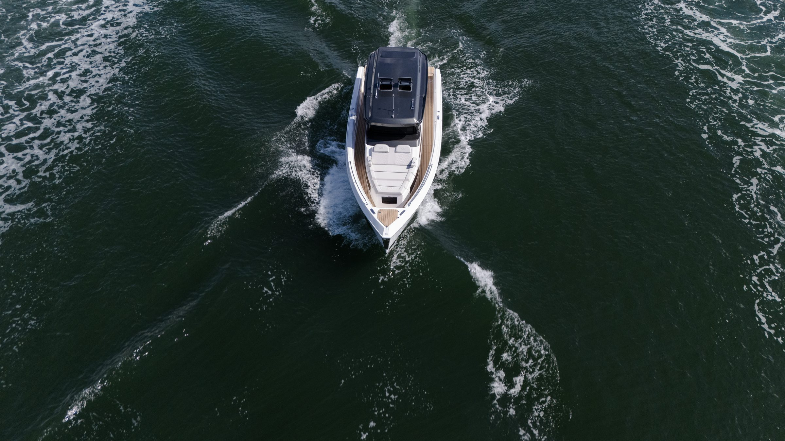

Conheça
Conheça
Navegue seu
melhor destino.
Representante oficial Schaefer no Paraná.
Conheça nossos barcos
Schaefer Yachts: referência em inovação no mercado náutico.
Únicas no mercado, aliando conforto à alta tecnologia, as lanchas produzidas pela Schaefer Yachts não deixam ninguém indiferente, mesmo à primeira vista. Se destacam pela beleza, acabamento, sofisticação e grande desempenho, características únicas entre a concorrência. Ao conferir a lista de opções, o cliente pode escolher o barco dos seus sonhos e o que melhor se adapta aos seus desejos — desde a Schaefer 380, 38 pés, à Schaefer 26M, com 86 pés, o maior e mais completo iate fabricado em série no Brasil.



O estaleiro
Bem-vindos à
Schaefer Yachts.
A Schaefer Yachts é o maior estaleiro de iates do país. São quase quatro mil barcos entregues, de 30 a 86 pés, e mais de 700 empregos diretos em Florianópolis.
Infusão a vácuo em todas as peças, CNC de cinco eixos, marcenaria e estofaria próprias. A certificação NMMA atesta a produção pelo padrão de segurança do mercado americano.
Vídeo institucional Schaefer Yachts
requer conexão com a internet
requer conexão com a internet

NP Yachts / Náutica Paraná
Revendedor oficial
no Paraná.
A NP Yachts é a marca do Grupo Náutica Paraná dedicada às embarcações Schaefer. A empresa tem mais de 30 anos de atuação no mercado náutico, reunindo conhecimento, credibilidade e o acesso direto ao estaleiro para acompanhar todo o processo, da escolha do modelo ao pós-venda.
Comece pela conversa.
Conte o que você procura e um especialista ajuda a definir o modelo, a motorização e o layout que fazem sentido para a sua navegação.